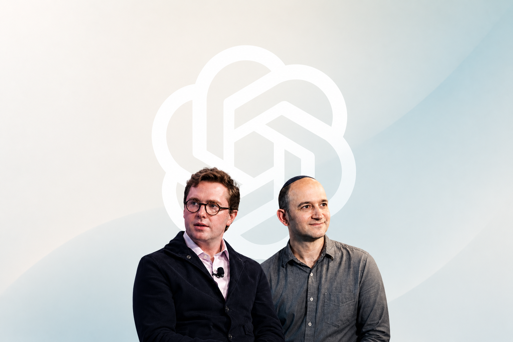

ChatGPT、Claude、Cursor、Midjourney… 主流 AI 工具的横向对比与深度评测。
2026年6月18日，OpenAI在IPO前夜连招两位重磅人物：Transformer架构共同作者Noam Shazeer从Google DeepMind出走加盟，前特朗普白宫AI政策官员Dean Ball将于7月6日加入领导新组建的Strategic Futures团队。Shazeer此前通过27亿美元收购协议重返Google后再次离职，Ball则将在内部治理与前沿AI政策领域为OpenAI构建与华盛顿的直接沟通桥梁——此举恰逢Anthropic因出口管制禁令被迫全球下架最强模型。
看今日完整快报 →
ChatGPT · Claude · Kimi · DeepSeek · Gemini
5 款工具对比 →Midjourney · DALL·E 3 · SD · Firefly · Recraft
5 款工具对比 →Cursor · Copilot · Windsurf · Codex · Claude Code
5 款工具对比 →Runway · Pika · Kling · Vidu
4 款工具对比 →ElevenLabs · Fish Audio · CosyVoice · Azure · OpenAI
5 款工具对比 →ChatGPT vs Claude 深度横评
阅读 →Cursor、Copilot、Windsurf、Codex CLI、Claude Code 全面对比。包含 12 个 FAQ、11 种场景决策矩阵和真实编码实战案例。
ElevenLabs、Fish Audio、CosyVoice、Azure TTS、OpenAI TTS 对比。包含盲听测试、方言专项评测和 9 场景决策矩阵。